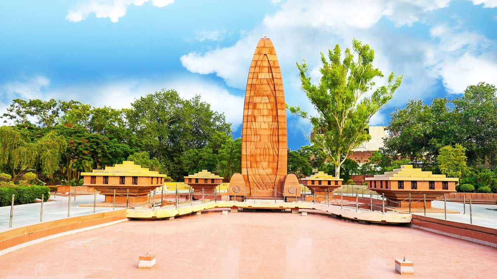
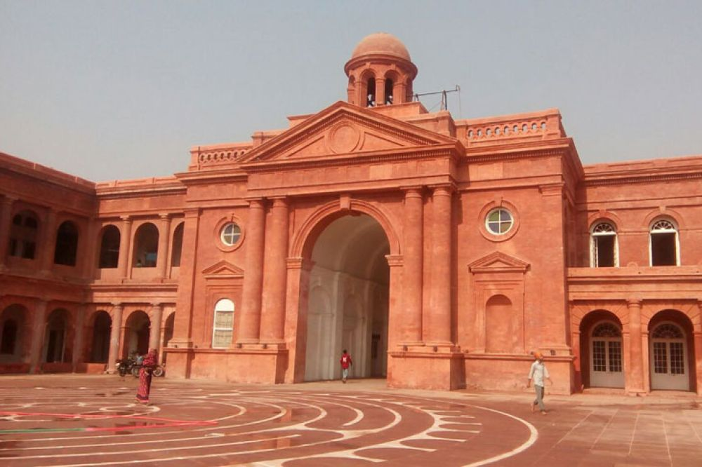
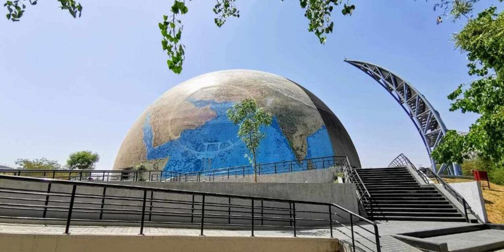
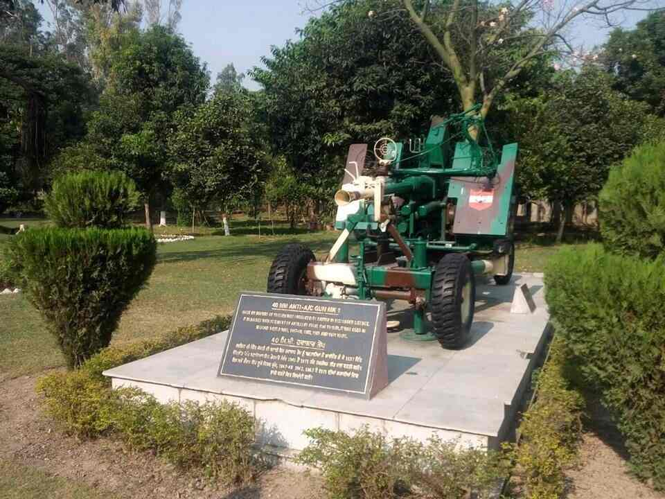
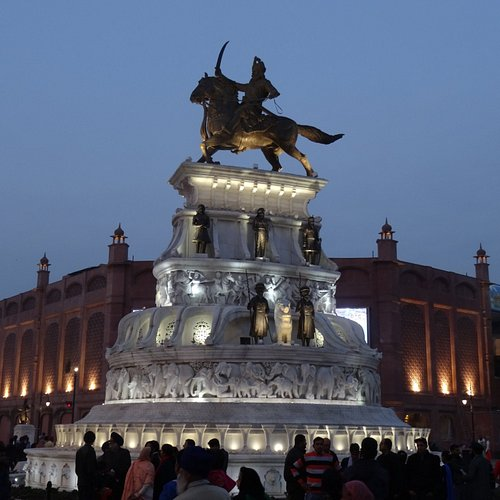
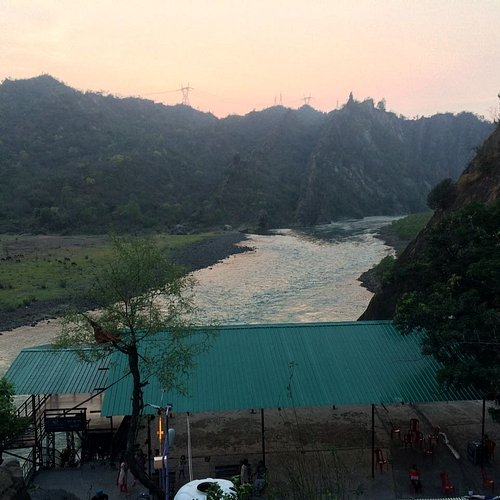
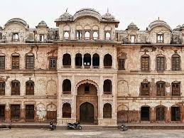
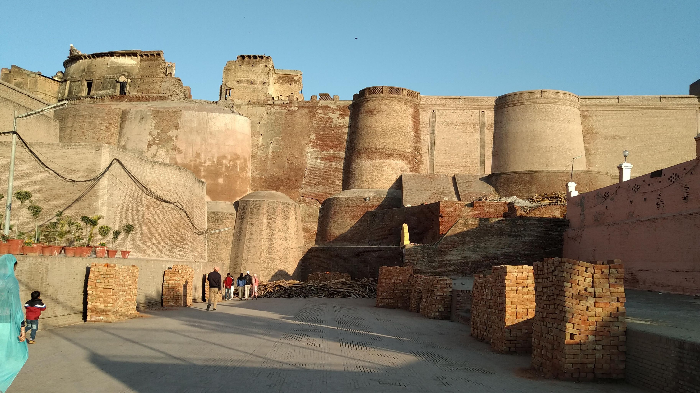

Must-Do Experiences in Punjab

Jallianwala Bagh
Best time to visit: July to September
For further information, visit the site

Partition Museum
Best time to visit: Tuesday through Sunday
For further information, visit the site

Pushpa Gujral Science City
Best time to visit: Every day
For further information, visit the site

Maharaja Ranjit Singh War Museum
Best time to visit: November to March
For further information, visit the site

Maharaja Ranjit Singh Statue
Best time to visit: October to March
For further information, visit the site

Mukteshwar Temple
Best time to visit: Every day
For further information, visit the site


Qila Mubarak
Best time to visit: Winter season
For further information, visit the site

Bathinda Fort
Best time to visit: October and March
For further information, visit the site